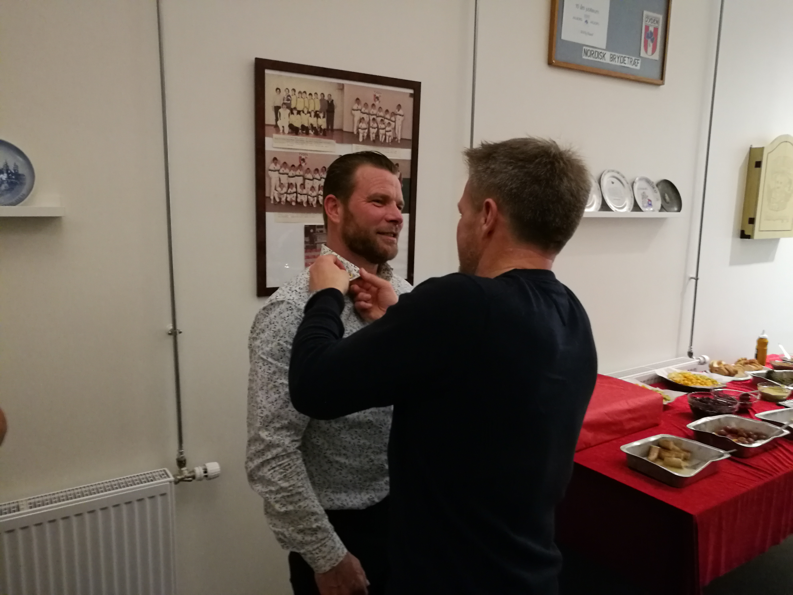
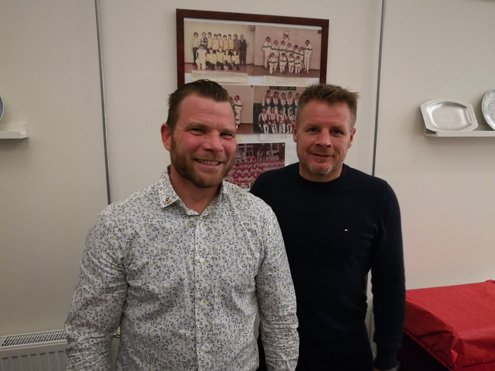
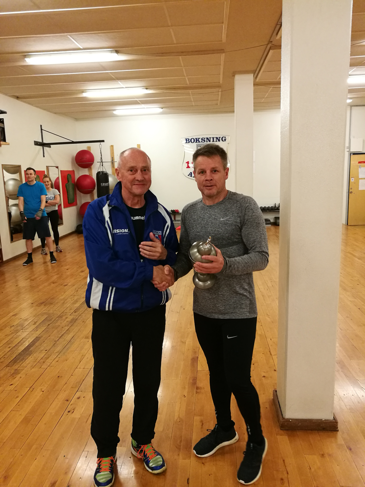

Martin Olesen modtog den 15/11-2019 til AK Jydens stiftelsesfest en AK Jyden nål med guldkrans for sit lange og stabile virke som træner i klubben i over 30 år. Benny Nielsen modtog i samme omgang AK Jydens lederpokal for sit store arbejde i klubben med både træning af boksere, stævne arbejde og praktisk arbejde, der holder klubben kørende.
  